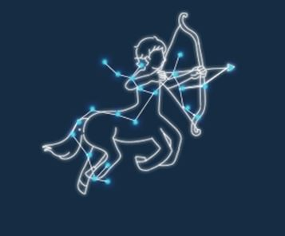

열정적으로 늘 새로운 가능성을 찾는 궁수 자리
- 뭐든지 하고자 하는 일이 있을때는 자유롭고 싶어해요.
- 늘 새로운 가능성을 열어두면서 새롭게 시도하는걸 즐기기도 한답니다.
- 그때그대의 일시적인 즐거움 보다는 다른 사람들과 깊은 관계를 맺으면서 행복을 느껴요.
- 그래서인지 항상 활발하고 활기가 넘치며 새로운 모임이나 술자리에서도 분위기 메이커를 담당하고 있어요.
- 어쩔때는 관종 같아보이지만 은근히 내향적이며 조금 과한 독립심을 품고 있어요.
- 반복적인 일상, 틀에 박힌걸 무지 싫어해요.
- 그래서 계획적인 약속은 싫어하고, 즉흥적인 약속을 좋아해요.
- 내가 생각지도 못한 충동구매를 즐기곤해요.
- 안정적이고 안전한 삶을 추구하기 보다는 창의적인 삶을 추구하기 때문에
- 잘 질려하고 권태로움을 잘 느끼기도 한답니다.
잘 맞는 궁합
어떤 사람인지 파악하기 힘든 독특하고 복잡한 염소자리
안 맞는 궁합
성실하며 이해심이 많고 개방적인 황소자리
어떤 사람인지 파악하기 힘든 독특하고 복잡한 염소 자리
- 공감능력이 매우 뛰어나고 동정심이 너무나도 많아서 내가 피곤하더라도 남들을 배려해주는게 속편해요.
- 이사람은 내사람이다! 하는 순간 너무너무 잘해준답니다.
- 내성적이고 조용해서 겉으로는 차가워 보인다는 말을 무지 많이 듣지만
- 친해지도 나면 이런 애였어? 라며 따뜻한 사람이라고 다들 말해요.
- 어딜가나 눈에 띄는 리더 타입은 아니지만 조용하게 자신의 영향력을 미치는 타입이랍니다.
- 조용히 다니는데 가끔은 조금 튀고싶어하기도해요.
- 계획세우는걸 너무나도 좋아해요. 뭐든지 할 일이 있으면 계획부터!
- 상상력이 너무 풍부해서 내가 생각하는걸 오나벽하게 공감해 줄 사람은 이세상에 없다고 생각해요.
- 그래서 감정이 앞설땐 혼자 생각할 시간이 필요하답니다.
- 평소에 내성적인 타입이라 무리 지어 놀기보다는 내 마음이 아주 잘 맞는 친구랑 단둘이 노는게 더 편하다고 생각해요!
- 새로운 일이나 새로운 사람들을 만나는걸 기피하는 편이예요.
- 다른 사람에게 거절당하거나 상처받는걸 민감해해서
- 새롭게 친해지고 싶은 사람이 생겨도 상대방이 먼저 다가와주길 원한답니다.
- 생각이 많아서 타인으로 부터 지속적인 지적과 비판을 받는다면 자신감을 쉽게 상실하고 무너지는 타입입니다.
안 맞는 궁합
성실하며 이해심이 많고 개방적인 황소자리
성실하며 이해심이 많고 개방적인 황소자리
- 수줍음이 많고 부끄러움이 많아요.
- 내면을 드러내지 않기 때문에 다른 사람들이 접근하기를 힘들어해요.
- 사람에 대한 관심이 적지만 내 사람에게는 매우 잘한답니다.
- 평소에 잡생각이 많고 망상을 많이 하는 편이라 감수성이 매우 풍부합니다.
- 내적 성장을 매우매우 중요하게 생각하죠.
- 그래서 고독과 깊은 생각을 매우 즐기는 타입으로
- 우울한 감정을 느낄 때 벗어나려고 하기보다
- 그 상황을 즐기는 경우가 많답니다.
- 남을 잘 믿지 못하고 쉽게 마음의 문을 열지 않아요.
- 무언가에 집중을 할때면 신중한 편이라서 오래 걸려요.
- 매우매우 느리고 신중하답니다.
- 한번 싫다는 감정이 들면 끝까지 싫어요! 그래서 연을 끊은 사람과는 호전 되기가 쉽지 않답니다.
- 내적감정을 중요시하는 타입이기 때문에 남의가치관을 매우 중요하게 생각해요.